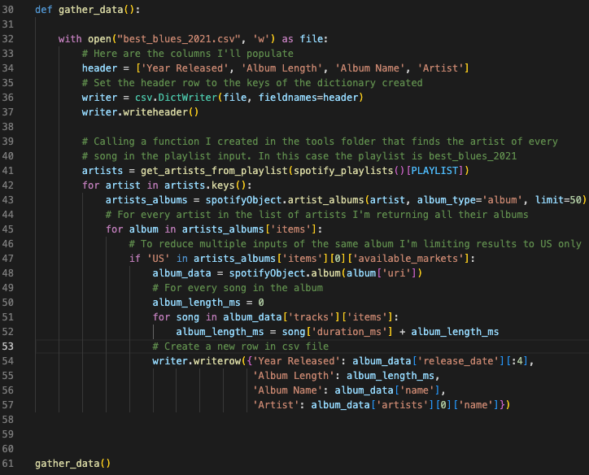
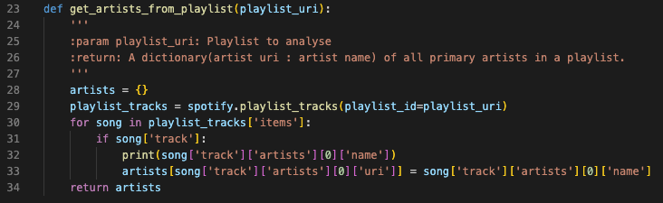

Spotify Data
Pipeline Project
Since I was young, I've had a passion for music. I thought it would be fun to analyze song length
over the years. To complete the analysis, I use the Spotipy package to import song data from Spotify.
The final analysis is presented in Tableau.
See the full code on Github: Spotify Analysis

In the first section of this function I am establishing the dictionary that will be output. Next, I'm creating the file using the headers established in the previous section.
Next is where the fun starts, for object artists, I'm returning the name of all artists in the playlist Best Blues 2021. This is a popular blues playlist on Spotify. Now that I have all the names of the artists I'll use that information to look up all their albums released in the US. I restrict the data to US releases only as some albums are released in several countries and I do not want to skew the results.

This is a snip of the function that is called in row 41 of the previous function (gather_data). The function retrieves all the artists from the playlist.
CSV data created

As you can see from this screenshot we now have the data required to answer the question. Are Blues albums getting longer as the years go on?